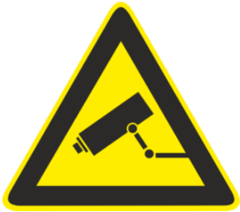

A
Carneades Kft. által a 1137 Budapest, Kálmán Imre utca 39. 4. emelet
ajtó 22. és 22/B szám alatti közös ingatlan területén mûködödtetett
elektronikus térfigyelõ rendszer adatkezelési szabályzata és
részletes adatkezelési tájékoztatója
A Carneades Kft. (továbbiakban:
Carneades) által birtokolt, a 1137 Budapest, Kálmán Imre utca
39. 4. emelet ajtó 22. és 22/B szám alatti ingatlan (továbbiakban:
ingatlan) területén elektronikus térfigyelõ rendszer (a továbbiakban:
kamerarendszer) mûködik, amelynek mûködtetésének feltételeirõl a
jelen adatkezelési tájékoztatót tesszük közzé, amely egyúttal az
adatkezelés szabályait is tartalmazza, és amely szabályokat a
Carneades és bérlõi is kötelesek betartani.
1Bevezetés és a kezelt személyes adatok köre
1.1A kamerarendszer mûködtetésének
célja az ingatlan területére való bejutás és onnan való kijutás,
valamint az ingatlanon található zárható informatikai szekrény (rack
szekrény) használat rögzítése.
1.2A megfigyelés során személyes
adatokat tartalmazó képfelvételek készülnek, és a képfelvételeket a
Carneades tárolja. A kamerarendszert a Carneades mûködteti.
1.3A kezelt személyes adatok köre a
kamerák által rögzített felvételek, a felvételek rögzítésének ideje,
a felvételekbõl esetlegesen levont következtetések (például:
jogsértés, szabálysértés vagy bûncselekmény tényállásszerûsége),
továbbá a felvételek felhasználásával esetlegesen induló eljárások
során keletkezõ személyes adatok.
1.4A Homoki Ügyvédi Iroda a Carneades
albérlõjeként és egyúttal képviselõjeként közremûködik az adatkezelõ
által elvégzend egyes feladatok ellátásában, így különösen
közvetlenül tájékoztatást át az adott személyrõl rendelkezésre álló
személyes adatokról, fogadja a kamerarendszer használatával
kapcsolatos egyes érintetti megkereséseket, és elvégzi az érintettek
által igényelt adattörléseket, szükség esetén pedig a hatóságok
részére az adatmentéseket.
2Az adatkezelés célja
2.1A megfigyelés célja elsõdlegesen a
következõ:
a)
a Carneades és albérlõinek, valamint az ingatlan területén tartózkodó
más személyek vagyontárgyainak védelme;
b) a vagyontárgyak és
személyek elleni szabálysértések és bûncselekmények és azok
elkövetõinek vagy segítõinek felderítése és bizonyítása;
c) a b) pont szerinti
cselekmények megelõzése a lehetséges jogsértések bizonyíthatóságának
biztosításával.
3Az adatkezelés jogalapja
3.1Az adatkezelés
jogalapja a Carneades, az albérlõk és az ingatlanban tartózkodó egyéb
személyek jogos érdeke, a vagyontárgyaik és személyük biztonságának
védelme érdekében, és a 2. pont szerinti cselekmények megelõzése
miatt (lásd az Európai Adatvédelmi Testület 3/2019. számú
iránymutatás a személyes adatok videoeszközökkel történõ kezelésérõl,
19. pontját). Az ingatlan
körüli területre vonatkozó rendõrségi bûnügyi térkép
[https://terkep.police.hu/portal/fertozottseg], valamint a lakás és a
benne lévõ ingóságok nagy értéke, valamint az egyes bérlõk mûködési
tevékenységére tekintettel indokolt az egyes vagyon elleni jogellenes
cselekmények megelõzésére rögzítõs megfigyelõrendszert alkalmazni
(lásd ugyanott 20. pont).
3.2Az adatkezelés
a 2. pontban meghatározott célok elõsegítésére alkalmas és megfelelõ,
ahhoz szükséges: rögzített felvételen
túl más eszközzel az utólagos bizonyíthatóságot ezekben az esetekben
nem lehet biztosítani.
3.3A megfigyelés határa az ingatlan területéhez
igazodik, korlátozódik. Az ingatlan területén egy kamerarendszer
mûködik, amely képrögzítõ képességû. Kamerák kizárólag a bejárati és
erkélyajtókat és körölüttük lévõ területet valamint az ingatlanon
elhelyezett (nyitást nem igénylõ) informatikai szekrényt figyelik.
Mosdókban, étkezõben, és a napi munkavégzést biztosító bármilyen
közös helyiségben nincsenek elhelyezve kamerák.
3.4A Carneades jogos érdeke az ingatlan területén
tartózkodó más személyek biztonságának, testi épségének és
vagyontárgyainak védelme, ezzel összefüggésben annak rögzítése, hogy
egy esemény idõpontjában milyen személyek tartózkodtak az ingatlan
területén, amely segítheti a Carneades jogérvényesítését és a
felelõsség tisztázását. Az adatkezelés az érintett személyek
biztonságának, testi épségének és vagyontárgyainak megóvásához
hozzájárul, hiszen az események egy része megelõzhetõ, ha az
elkövetõknek számítaniuk kell arra, hogy a cselekményüket kamera
fogja rögzíteni, és az adatkezelés a bekövetkezett események
kivizsgálását elõsegíti a felvételek megtekintése esetén.
3.5Az adatkezelés idõtartama általános esetben 72
óra. A 72 órás rögzítési idõtartamra azért van szükség, mert a
hétvégi vagy hétvégét megelõzõ esti (munkaidõn kívül), kiküszöbölni
vagy bizonyítani kívánt eseményeket is nagy valószínûséggel vissza
lehet nézni haladéktalan jelzés esetén.
3.6Az adatkezeléssel
érintettek az az ingatlanban tartózkodó bérlõk és egyéb személyek,
tehát a jogos érdek és a személyes adat kezelésével érintettek köre
jelentõs átfedésben van. Az érintettekrõl akkor készül felvétel, ha a
kamerával fedett helyszínen közlekednek. A felvétellel érintett
területeket egyértelmûen megjelöljük.
3.7Az ingatlanban tartózkodó bérlõkön kívüli
érintett személyek köre korlátozott, így számukra egyértelmû, hogy az
ingatlanban, nem nyilvános helyszínen tartózkodnak ott, nem
kikapcsolódási célból vannak.
3.8Az adatkezelés az érintetteket negatívan
érintheti, hiszen abból kifolyólag, hogy nem hozzájárulás alapján
valósul meg az adatkezelés, elképzelhetõ, hogy ez az érintett akarata
ellenére történik. A lehetõ legrövidebb ideig történõ adatkezelés, és
a korlátozott hozzáférési lehetõség az adatokhoz hatékonyan enyhítik
ezeket a negatív hatásokat. Az érintettek számára ugyanakkor a
kamerák üzemeltetése kifejezett elõnnyel is járhat, hiszen az
érintettek vagyonának védelmében és az általuk esetlegesen
elszenvedett jogellenes cselekmény felderítésében is szerepet
játszhatnak a felvételek.
3.9A jelen szabályzatban leírtak szerint a
felvételek kizárólag a szabálysértések és bûncselekmények megelõzése,
felderítése és bizonyítása céljára használhatóak. A jelen szabályzat
az adatkezeléssel kapcsolatosan számos további korlátozást és védelmi
intézkedést határoz meg (így különösen a kamerák elhelyezése, a
felvételek tárolása és az azokhoz való hozzáférés tárgyában).
3.10Minderre tekintettel a Carneades döntése
szerint az elektronikus térfigyelõ rendszer esetén a fent felsorolt
személyek jogos érdeke elsõbbséget élvez a felsorolt érintettek
személyes adatok kezelésének elkerülésének érdekével szemben, és a
Carneades jogos érdeke arányosan korlátozza az érintetti jogokat és
szabadságokat. A jelen pont a jogos érdek érdekmérlegelési tesztjének
is minõsül egyben.
3.11Carneades az adatkezelés tárgyában külön
hatásvizsgálati tanulmányt készített.
4Az adatkezelés idõtartama
A kamerákkal
készített és eltárolt képfelvételeket az ingatlanban lévõ központi
felvevõ egységen a rögzítéstõl számított 72 óráig tároljuk, ezt
meghaladóan pedig akkor, ha ezen idõtartamon belül Carneades részére
jelzés érkezik azzal kapcsolatosan, hogy az adatok további megõrzése
indokolt kivizsgálás vagy igényérvényesítés miatt.
5Az adatkezelés körülményei
5.1Az
elektronikus térfigyelõ rendszer alkalmazásáról a kamerával érintett
helyszíneken jól látható helyen az 1. melléklet szerinti ismertetõt
kell közzétenni, valamint az ez alapján érdeklõdõ személyek számára
Carneades a 6. pontban leírtak szerint további tájékoztatást ad.
5.2Nem készül
kamerafelvétel olyan helyeken, ahol erre nem számítanak az
érintettek, így különösen mosdókban, öltözõkben és a napi
munkavégzést biztosító helyiségekben.
5.3A
kamerarendszer 4 kamerából áll. Egy központi felvevõ egységhez
(hálózati videófelvevõ egységhez) 4 kamera kapcsolódik. A kamerák
üzemelése folyamatos, a rögzítés a mozgásérzékelõk jelzése esetén
folyamatos, a kamerák hangot nem rögzítenek.
5.4A
kamerarendszer napi üzemeltetése során szükséges tevékenységet a
Carneades által bevont albérlõ látja el, õk végzik el a
kamerarendszerrel kapcsolatos alapvetõ mûveleteket (kamerarendszer
leállítása, újraindítása, felvételek megtekintése, exportálása,
egyedi törlése). A kamerarendszer telepítését és javítását ellátó
személlyel Carneades egyedi megállapodást köt, a javítást végzõ
személy a kamerafelvételekhez nem fér hozzá, a meghibásodott
adathordozót vagy az azon lévõ felvételek és más adatok törlése után
vihetik el.
5.5A központi
felvevõ egység a kamerákon kívül Carneades más eszközeirõl nem érhetõ
el, a központi felvevõ egység az ingatlanon kívül (így különösen
felhõben) adatokat nem tárol.
5.6A
kamerarendszer központi felvevõ egysége nem biztosított arc- vagy
testkeresési és arc- vagy tesfelismerési, -összehasonlítási funkciót.
5.7Carneades
felelõs az adatkezelésben érintett munkatársakat és a felvételekhez
hozzáférõ más személyeket tájékoztatni az adatkezelés körülményeirõl,
valamint az adatkezelésben érintett munkatársak részére köteles
biztosítani a használathoz szükséges oktatást és felkészítést.
5.8A
kamerarendszer által rögzített képek megtekintésére kizárólag a 2.
mellékletében felsorolt személyek jogosultak az ingatlan helyszínén.
A kamerák által készített és tárolásra került felvételeket kizárólag
a 2. mellékletében felsorolt személyek nézhetik vissza és a
felvételekrõl mentést kizárólag az ugyanott felsorolt személyek
készíthetnek.
5.9Carneades a
felvételekkel kapcsolatos egyéb adatokat (például feljegyzések,
jegyzõkönyvek) az ügyvezetõ által meghatározott irodahelyiségében
tárolja.
5.10A
kamerarendszer képeit kizárólag az arra jogosult személyek
tekinthetik meg, ezt biztosítja az, hogy a kamerarendszerhez
fizikailag csak az elõzõ pont szerinti helyszínen lehet hozzáférni
(fizikai korlátozás), távolról nem, másrészrõl a rendszerhez való
helyszíni hozzáférést is az adatkezelõ logikailag korlátozza (jelszó
és felhasználónév: a tárolt képfelvételekhez történõ hozzáférés csak
az eljáró személy egyedi azonosítása után történhet, a felvételeket
tároló és visszajátszó rendszerbe való belépés feltétele ennek a
személyhez kötött jelszónak a használata).
5.11A tárolt
felvételek visszanézésére kizárólag a 2. pont szerinti cselekmények
kiszûrése és azok megszüntetéséhez irányuló intézkedések
kezdeményezése céljából kerülhet sor. A kamerák által közvetített
képekrõl más felvevõ eszközzel felvételt készíteni nem lehet.
5.12A tárolt
felvételek visszanézését és a felvételek kimentését dokumentálni
kell.
5.13A
felvételekrõl biztonsági másolat nem készül. A 72 órás idõtartam
lejártával a felvételek automatikusan törlõdnek, ha arról addig
kimentés nem készül vagy a törlést egyedileg nem korlátozzák.
5.14A jogsértõ
cselekmény észlelését a hatóságok felé azonnal jelezni kell, egyben
tájékoztatni kell a hatóságot, hogy a cselekményrõl képfelvétel
készült.
6Az érintettek jogai
6.1Érintett: a rögzített információ
alapján azonosított vagy azonosítható természetes személy, jelen
esetben mindazon személy, akirõl kamerafelvétel készül, és akirõl
készült kamerafelvételt az ügyvédi iroda tárolja.
6.2Az, akinek jogát vagy jogos érdekét a
képfelvétel, illetve más személyes adatának rögzítése érinti, a
képfelvétel, illetve más személyes adat rögzítésétõl számított 72
órán belül jogának vagy jogos érdekének igazolásával, írásban kérheti
a Carneadestõl vagy az ingatlan helyszínén jelen lévõ képviselõjétõl
(Homoki Ügyvédi Iroda), hogy az adat ne kerüljön megsemmisítésre,
illetve törlésre (adatkezelés korlátozása). Bíróság vagy más hatóság
megkeresésére a rögzített képfelvételt, valamint más személyes adatot
a bíróságnak vagy a hatóságnak haladéktalanul meg kell küldeni. A
kérelmet Carneadesnek kell benyújtani.
6.3Az
érintett kérelmezheti Carneadestõl
tájékoztatását
személyes adatai kezelésérõl,
személyes
adatainak helyesbítését, valamint
személyes
adatainak – a kötelezõ
adatkezelés
kivételével – törlését vagy zárolását.
6.4Ha
az érintett a személyes adatai
tájékozatását kéri, és ennek részeként kéri a rá vonatkozó felvételek
kiadását, az ügyvédi iroda köteles a felvételen látható, az
érintetten kívüli személyek elhomályosításával vagy eltakarásával
biztosítani, hogy a kiadott felvételen csak az érintett személyes
adatai szerepeljenek.
6.5Az érintett
írásban tiltakozhat személyes adatának kezelése ellen a Carneadesnél,
ha a személyes adatok kezelése vagy továbbítása kizárólag az
adatkezelõre vonatkozó jogi kötelezettség teljesítéséhez vagy az
adatkezelõ, adatátvevõ vagy harmadik személy jogos érdekének
érvényesítéséhez szükséges, kivéve kötelezõ adatkezelés esetén.
6.6Ha az érintett
kéri a rá vonatkozó felvételek törlését vagy tiltakozik a
felvételeinek kezelése ellen, de a tárolt felvételekre egy
folyamatban lévõ vizsgálathoz szükség van, ez egy olyan kényszerítõ
erejû jogos oknak minõsül, ami biztosíthatja a Carneades számára a
személyes adatok kezelésének folyatását.
6.7A tiltakozást
a kérelem benyújtásától számított legrövidebb idõn belül, de
legfeljebb 30 napon belül kell Carneadesnek megvizsgálnia, majd annak
megalapozottsága esetén döntést hoz, és döntésérõl a kérelmezõt
írásban tájékoztatja. Ha a tiltakozás kivizsgálásáig Carneades a
felvételeket már törölte, errõl tájékoztatja a kérelmezõt.
6.8Az
elektronikus térfigyelõ rendszerre vonatkozó melléklettel
kiegészített adatkezelési szabályzat az aláírásától lép
hatályba.
dr.
Rátai Balázs
ügyvezetõ
1.
melléklet
Tájékoztató felirat:

A
BEJÁRATI AJTÓ BELSÕ OLDALA KAMERÁVAL MEGFIGYELT TERÜLET!
Tulajdon-
és személy elleni jogsértések megelõzése és bizonyítása miatt. A
felvételeket 72 órán át tároljuk. Adatkezelõ: Carneades Kft. A
tájékoztató elérhetõsége:
A
TERASZAJTÓ BELSÕ OLDALA KAMERÁVAL MEGFIGYELT TERÜLET!
Tulajdon-
és személy elleni jogsértések megelõzése és bizonyítása miatt. A
felvételeket 72 órán át tároljuk. Adatkezelõ: Carneades Kft. A
tájékoztató elérhetõsége:
A
RACK SZEKRÉNY ÉS KÖZVETLEN KÖRNYEZETE KAMERÁVAL MEGFIGYELT TERÜLET!
Tulajdon-
és személy elleni jogsértések megelõzése és bizonyítása miatt. A
felvételeket 72 órán át tároljuk. Adatkezelõ: Carneades Kft.
2.
melléklet
Jogosultak:
A
tárolt felvételek visszanézésére és a tárolt felvételekrõl mentés
készítésére jogosultak köre köre: